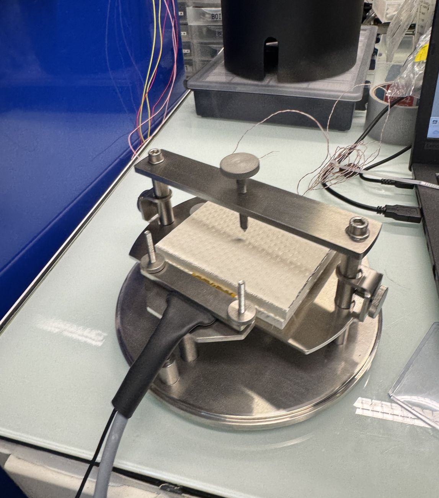
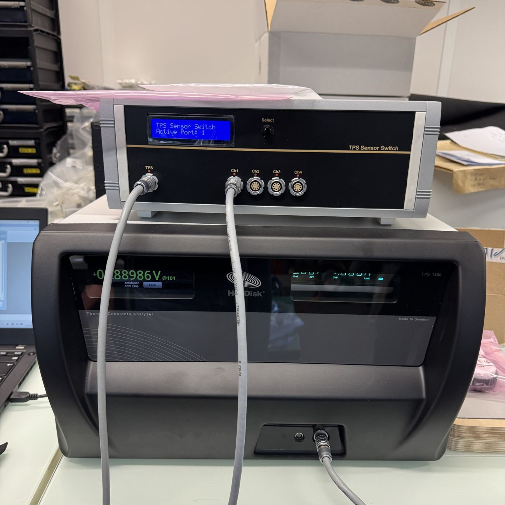
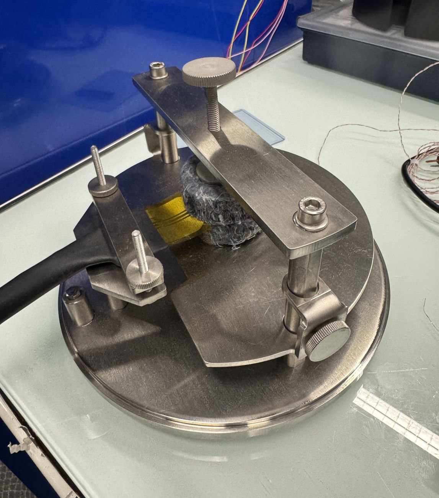
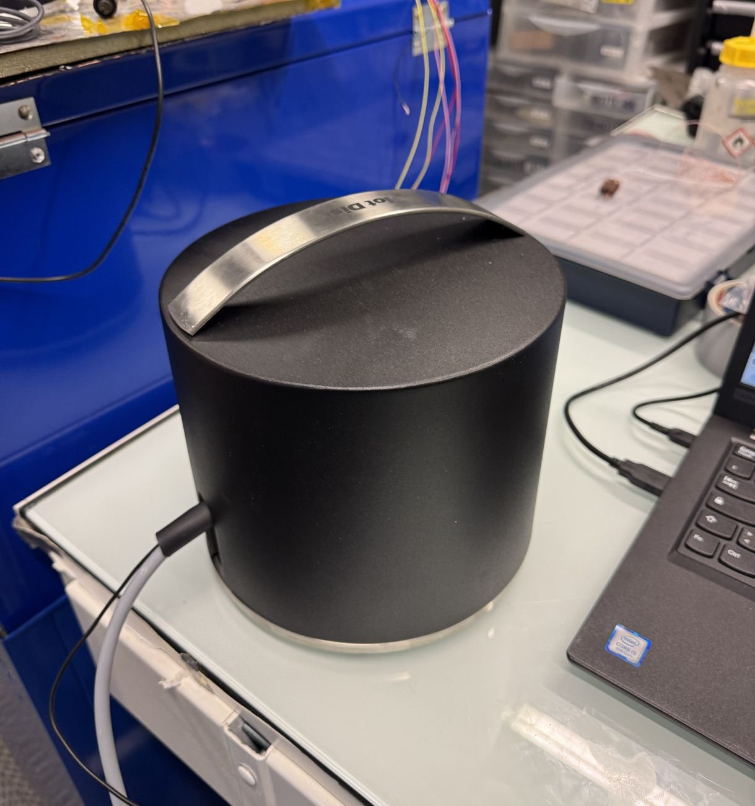
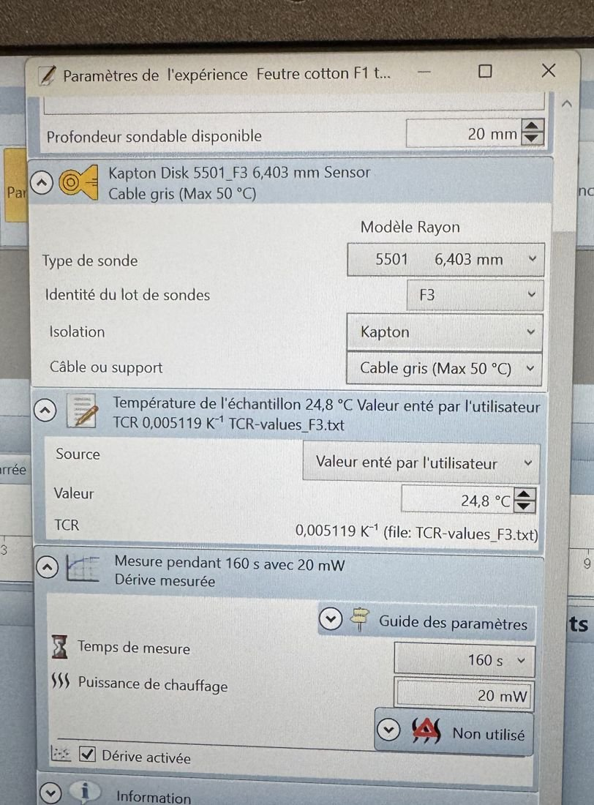

تشغيل · مختبر MSME (UMR 8208 CNRS)، جامعة غوستاف إيفل · مشروع HeatTransferID · 2026
المحلّل الحراري Hot Disk TPS 1500
ISO 22007-2اختبار الاستلاممرجع معتمدالتكرارية

الملخص
يقيس Hot Disk TPS 1500 كيفية انتشار الحرارة في المادة: في اختبار واحد يدوم بضع عشرات من الثواني يعطي الموصلية الحرارية والانتشارية والسعة الحرارية الحجمية. لولب مزدوج رقيق جدًا من النيكل، محصور بين عيّنتين متطابقتين، هو في آن واحد المسخّن ومقياس الحرارة. يخدم الجهاز المشروع التعاوني HeatTransferID (MSME وCERTES وTHEMACS) حول العوازل المسامية والليفية والحيوية والمعاد تدويرها.
قمت بتشغيله في موقع الشريك الصناعي وكتبت دفتر المختبر الخاص به (50 صفحة): النظرية، وصف الجهاز، اختيار المجسّ والقدرة والزمن، إجراء القياس واختبارات الاستلام.
الجانب التجريبي
الاستلام على مرجع معتمد من الفولاذ AISI 316L: أعطت 10 قياسات عند 21.66 °م قيمة λ = 13.77 واط/(م·ك) (انحراف معياري 0.78٪)، وa = 3.606 مم²/ث وρCp = 3.816 ميغاجول/(م³·ك). ثم فُحصت كل قناة من مبدّل المجسّات واحدة تلو الأخرى (من 13.61 إلى 13.78 واط/(م·ك)). الفحص الروتيني قبل كل جلسة: ثلاثة قياسات على الأقل على المرجع، وتكون مطابقة إذا بقي الفرق تحت الدقة المعلنة 5٪ (1 إلى 2٪ متوقعة عمليًا).
المنهجية والمعادلات
تعطي مقاومة المجسّ درجة حرارته المتوسطة (معامل الحرارة \(\alpha\approx0.005\ \mathrm{K^{-1}}\))، ويتبع ارتفاع الحرارة حل المصدر المستوي العابر (\(P\): قدرة التسخين، \(r\): نصف قطر المجسّ):
$$R(t)=R_0\left[1+\alpha\,\Delta T(t)\right],\qquad \Delta T(\tau)=\frac{P}{\pi^{3/2}\,r\,\lambda}\,D(\tau),\qquad \tau=\frac{\sqrt{a\,t}}{r},\qquad \rho C_p=\frac{\lambda}{a}$$اختيار زمن القياس: يجب أن تبقى نسبة الزمن الكلي إلى الزمن المميز بين 0.33 و1، وأن يبقى العمق المسبور داخل العيّنة (\(L\)، \(l\)، \(e\): أبعاد القطعة):
$$0.33\,\frac{r^{2}}{a}\le t\le\frac{r^{2}}{a},\qquad \Delta p=2\sqrt{a\,t}\ \le\ \min\left(e,\ \tfrac{L}{2}-r,\ \tfrac{l}{2}-r\right)$$الأشكال








